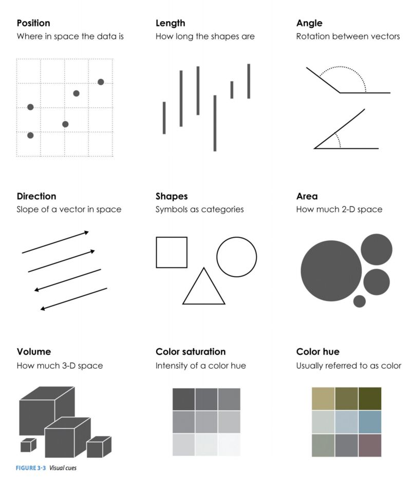

在R语言的可视化工具中，ggplot2无疑是一款简洁、强大、优雅的工具。本文简单介绍ggplot2的用法
本文中出现的代码引自《R数据科学》一书
ggplot2函数可用以下的代码模板概括：
1 | ggplot(data = <DATA>) + |
其中，这7个参数分别为数据集（DATA）、几何对象（ GEOM_FUNCTION）、映射集合（MAPPING）、统计变换（STAT）、位置调整（POSITION）、坐标系（COORINATE_FUNCTION）和分面模式（FACET_FUNCTION）。
这套模板也可以作为我们学习ggplot2的总领，搞清楚每幅图中的这7个参数并能熟练地运用它们，在可视化这个领域就有了“初窥门径”的境界了。
以下使用ggplot2包内的mpg数据进行演示
数据集 | data
ggplot的接受的数据形式包括数据框类型的data.frame or tibble
在data参数中指定输入的数据，例如：ggplot(data = mpg)
映射集合 | aes()
在使用aes()函数确定x、y轴的关系以及数据后，就可以作图了。
以下用ggplot2包中自带的数据集mpg进行绘图，根据hwy~displ的映射关系作散点图如下：
1 | > ggplot(data = mpg) + geom_point(aes(x=displ, y=hwy)) |

除了x、y两个变量外，我们还可以像图中添加第三个变量——图形属性。图形属性包括图中几何对象的颜色、大小、透明度、形状等。
这里引用一张在网上看到的关于可视化时需要考虑的因素的总结图：

通过添加图形属性还可以实现对图中数据的简单分组，例如我们使用车的类别（class）对mpg中数据进行分组绘制：
1 | > ggplot(data = mpg) + |

注意到当我们使用在aes()内指定color, fill, shape, alpha 等参数时，函数已经帮我们根据指定的变量进行分组了，这时候不再需要使用group参数特地声明分组变量
同时，ggplot还会根据图形属性加上图例。
除了color之外，还有其他几种图形属性，包括：size ，shape ，alpha ，group 等等。有趣的是使用shape这一属性时，我们可以看到以下的结果：
1 | > ggplot(data = mpg) + |

由于在默认情况下ggplot一次只能显示6种形状，所以超出范围的变量被无情地丢掉了。
而想对整个图形的属性进行调整的话，只需要在aes()函数之外调整参数即可，例如将所有点都设置为蓝色：
1 | ggplot(data = mpg) + |

分面 | facet_*()
在ggplot2中分面函数包括:
1 | facet_grid() |
除了使用图形属性来对数据进行区分作图外，还可以使用分面的方法，根据变量将数据切分到不同的区域中作图。
例如，我们使用根据汽车的类型（class）给点添加了不同的颜色，我们也可以根据汽车的类型分面作图：
1 | ggplot(data = mpg) + |

使用两个变量进行分面时，可以使用facet_grid，例如使用dyr和cyl进行分面：
1 | ggplot(data = mpg) + |

这里使用facet_wrap也可以达到同样的效果，但需要在vars()内输入用于分面的变量，同时注意分面的title是变量的组合
1 | ggplot(data = mpg) + |

几何对象 | geom_*()
这一部分可以说是ggplot2最核心的部分，通过不同几何对象的使用，我们可以利用ggplot2绘制散点图、折线图、直方图、箱线图等等。
顾名思义，几何对象就是用来表现数据的局和图形对象。例如，折线图使用了直线几何对象，箱线图使用矩形和直线几何对象等等。
同样地，还是刚才的例子，但我们这次绘制一个曲线图：
1 | > ggplot(data = mpg) + geom_smooth(aes(x=displ, y=hwy)) |

看到这里我们应该可以发现 <GEOM_FUNCTION>仅是规定了数据绘制的几何对象，那么假如将映射关系也移至ggplot()函数中又会如何呢？我们不妨直接动手操作一下：
1 | > ggplot(data = mpg,aes(x=displ, y=hwy)) |

由于我们没有指明几何对象，所以ggplot()函数直接生成了hwy~displ 的一个空白图层。接下来只要指定几何对象，就可以生成刚刚的曲线图了。
1 | > ggplot(data = mpg,aes(x=displ, y=hwy)) + geom_smooth() |

ggplot实际是通过图层叠加的方式来进行绘图的。那么有没有可能在同一张图上，以不同的几何对象绘制同一组数据呢？
还是那句话，实践出真知：
1 | > ggplot(data = mpg,aes(x=displ, y=hwy)) + |

通过图层叠加的办法，我们成功地绘制了同时用散点和曲线表示该组数据的图。
注意：最重要的一点是要注意ggplot()中的参数是对图形进行全局调整，即每一图层都会受其影响。而在 geom_*()中的参数仅是针对当前图层的局部调整。灵活地利用ggplot()的全局和局部映射特性就可以做出较为复杂的图。
统计 | stat
这里使用diamonds数据集进行展示
stat = ‘count’ | ‘identity’
假设我们需要利用柱状图可视化不同cut级别的钻石数目时，我们可以直接使用geom_bar(stat='count')的统计图层
1 | ggplot(data = diamonds) + |
在这里，geom_bar(stat='count')其实干了两件事：
- 根据
cut分组统计每个类别有多少钻石 - 可视化统计结果为bar-chart

From: R for Data Science
我们也可以先计算每个分组的数目，再使用geom_bar可视化：
1 | diamonds %>% |

注意这里使用了stat=identity来指定x和y轴的变量分别是什么
stat(prop) | ..prop..
我们还可以直接利用统计图层计算每个类别所占的比例：
1 | ggplot(data = diamonds) + |

stat_summary
如果想进行更多的统计描述，可以使用stat_summary()图层
例如，我们想统计不同cut的克拉carat的最小、大值和中位值
1 | ggplot(data = diamonds) + |

位置调整 | position
对于柱状图而言，常用的位置调整包括stack (default), fill, dodge, identity
假如我们根据钻石的cut绘制bar chart，在此基础上使用clarity进行填色，并使用不同的position参数：
1 | library(patchwork) |

这里使用
patchwork包进行拼图
对于散点图，常用的position参数为jitter，可以对点的值添加一个非常小的偏移值，以将重叠的点错开
1 | p1 <- ggplot(mpg, aes(x = displ, y = hwy)) + |

坐标系 | coord_*()
ggplot2默认的坐标系统为笛卡尔坐标系统，提供以下函数对其进行调整：
coord_flip()：翻转x, y轴coord_polar()：转换为极坐标系coord_quickmap()：调整地图的长宽比 （不展开）
coord_flip()的一个例子
1 | p1 <- ggplot(data = mpg, mapping = aes(x = class, y = hwy)) + |

coord_polar()的一个例子 – 可以用于绘制饼图和风玫瑰图
1 | bar <- ggplot(data = diamonds) + |

综上所述，我们就简单介绍ggplot中的绘图体系，以后有更多使用心得再做分享
完。